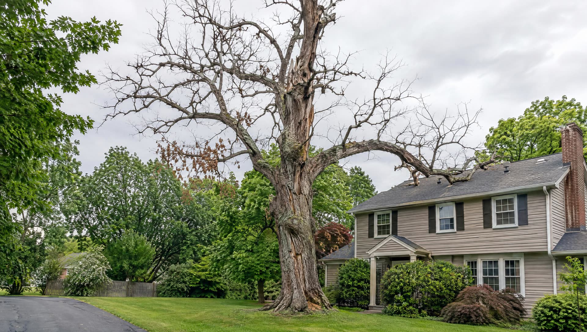
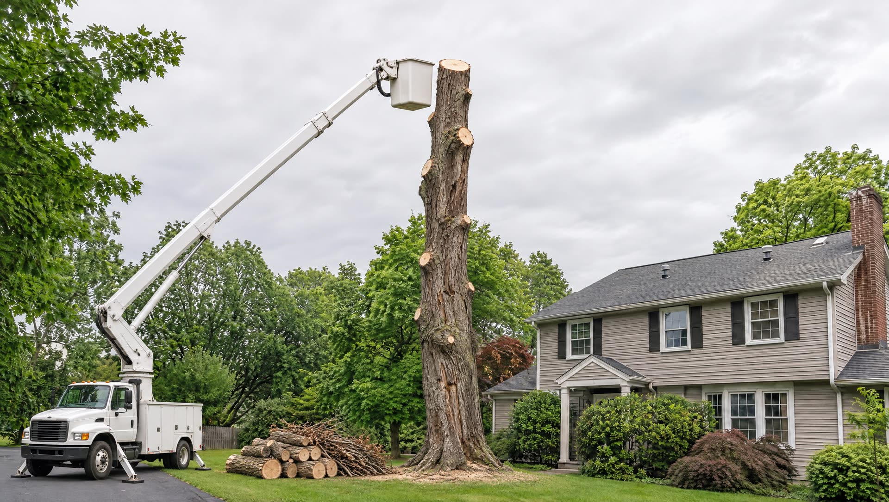
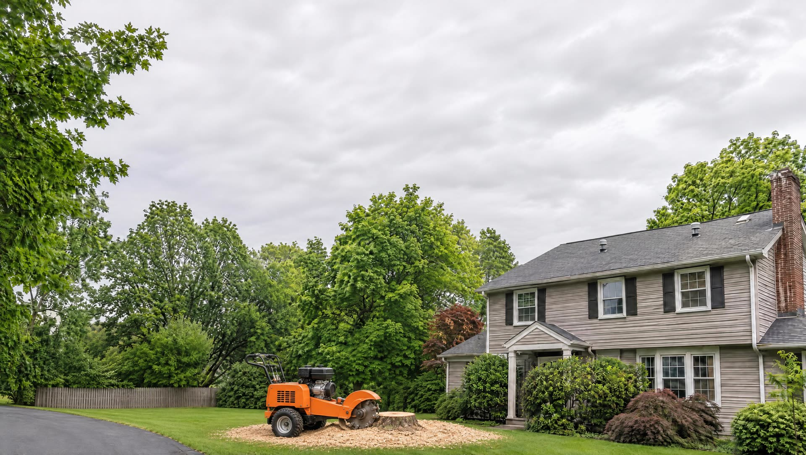
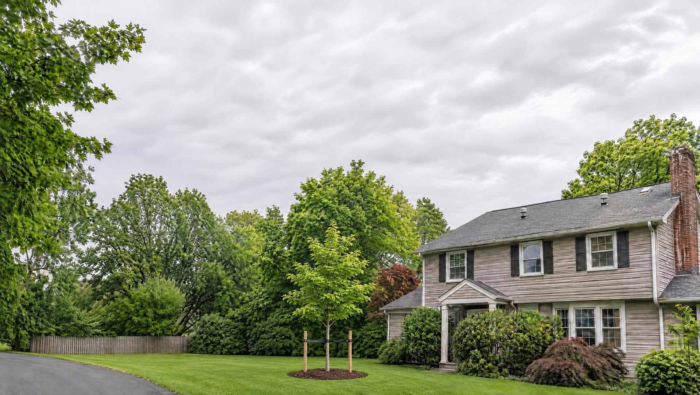

First, an honest look.
This oak is past saving, and its heaviest dead limb hangs over the roof. A light wind could bring it down.
Down in sections, not in one go.
A 60-foot aerial bucket truck gives precise cuts and controlled drops. For high-risk and very large trees, a crane lifts each piece clear.
Then the stump.
Grinding takes it 12 to 18 inches below the surface. Before a new tree or a patio, we remove the whole root mass instead.
Ground you can use again.
Backfilled with the right material for what comes next: turf, a bed, or a new tree in a better spot.
Pruning, removal, crane work, stumps
Tree
Our first goal is always to save a tree. Corrective pruning can add years to its life. But a tree at the end of its lifespan, too close to a foundation or damaged by a storm is a hazard, and then it has to come down safely.
Request an estimateWhat is included
- Pruning
- Removals
- Crane assisted removals and pruning
- Bucket truck service
- High hazard and emergency projects
- Stump grinding
- Tree preservation
- Root injections and treatment programs
- Land clearing
See the difference
Drag the green line.
The same spot, from the same place. Pull the line left and right to compare.
Under the surface
Grind it, or take it all out?
It depends on what the ground is for next. Pick one to see what is left underneath.
Good to know
- 60-foot bucket truck
- For precise cuts and controlled drops.
- Crane assisted removals
- Large and dangerous trees come out without damaging what is around them, often loaded straight onto the truck to spare the turf.
- Emergency storm service
- Year-round. We work with many insurance companies to clear fallen trees from homes and businesses quickly.
- Safety first, overhead
- Mandatory protective equipment and operating procedures on every aerial job.
Next service
Excavation →